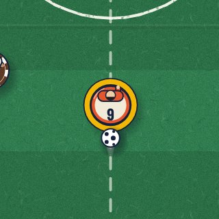
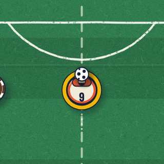
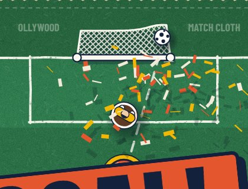
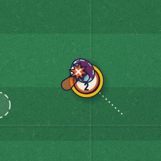
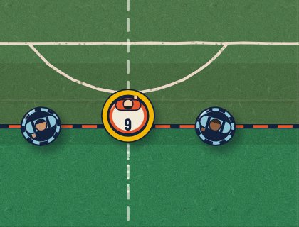

Change 11. Real frames from the build, with the proposed additions drawn over them in mustard. Today each moment has a chalk puff and a small camera kick; that is the right vocabulary, it is just too quiet to be felt on a phone. Each addition has a duration, a sound and a haptic, so the three land together. All of it respects Reduce motion (no hit-stop shake, no slow replay; sounds and haptics stay).

Receive
The ball sticks
Now: a faint chalk ring, a soft tone
The live ring snaps 12% larger for 90ms, then settles.
A leather "thock" (recorded), haptic 12ms.
The HUD base for this player gets the ball icon: you know you have it without looking down.

Strike
Hit-stop on contact
Now: three strike marks, camera kick
Hold the picture for 50ms on a shot (30ms on a pass) as the ball leaves: the oldest trick for making a kick feel heavy. Render-only: the sim and the clock do not lose the time.
A chalk streak behind shots only, fading over 250ms.
Recorded boot-on-ball, haptic 30ms.

Goal
The net moves
Now: confetti, the GOAL stamp, crowd noise
The net bulges where the ball hit and swings back over 400ms.
The score chip in the HUD flips 1-1 to 2-1 at the same moment as the stamp, not 650ms later.
A short brass-band sting under the crowd, then into the replay (mock 04).

Tackle
Freeze, then explain
Now: starburst, sheet slides over it
80ms freeze on the foot meeting the ball, a dull thud, haptic 50ms.
The tackler gets the mustard halo that stays under the fail card (mock 03).
The figure that lost it rocks on its base (the renderer already has a "rock" parameter).

Offside
Show the line
Now: whistle, line and runner shown after the event
The frame freezes at the moment the pass was played (not when the run is caught), with the line drawn across the whole pitch: a VAR still.
Two short whistle blasts, haptic double pulse.
Cue sheet
One table to tune
Freeze length, sound, haptic
Every beat in one place in code, so feel can be tuned in one pass on a real phone rather than scattered across sim, render and audio.